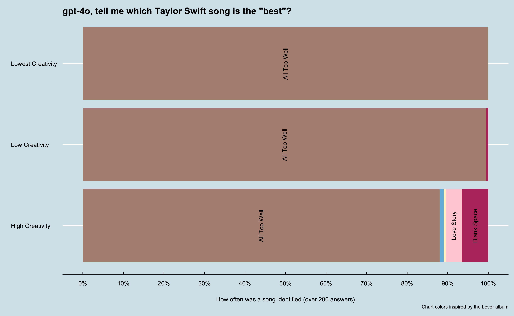
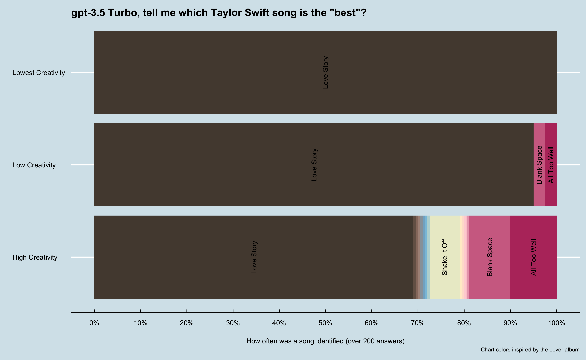
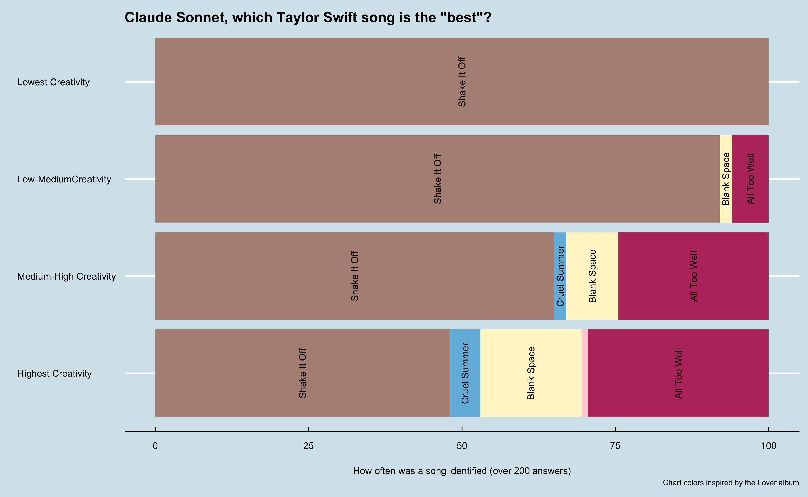

Setting the tone: Exploring LLM Temperature Settings with Taylor Swift’s Songs
After a few conversations around the non-deterministic nature of Large Language Models (LLMs), I realized I had not explored the impact of temperature settings on LLM responses. So it was time for some exploration into Taylor Swift songs, of course.
Python
R
ggplot
OpenAI
LLMs
Author
Matt Leary
Published
July 19, 2024
Temperature settings for LLMs, what’s the deal?
Adjusting the temperature setting in large language models (LLMs) is like adjusting the creativity dial of the output. When the temperature is set low, the LLM produces more predictable and consistent responses, similar to how a careful and precise person might answer questions. On the other hand, when the temperature is set high, the LLMs become more imaginative and varied in its responses, akin to a brainstorming session where all ideas are welcome.
Imagine you ask an LLM to complete the following sentence:
The cow jumped over the …
With a lower temperature setting, you will probably get moon every time, even if you ask the question a 1,000 times. However, as you increase the temperature setting, you will still get moon many times but also fence, car, or other answers.
When using LLMs at work, it is important to understand how the temperature setting impacts the responses. If you are summarizing a document multiple times (perhaps you run your process every night), users might be confused if each day a drastically different summary is presented to them. Conversely, if you are using an LLM to help generate emails or other creative content, you might want to increase the temperature setting to get more varied responses.
As I increase my use Azure OpenAI services at work, these types of discussions are becoming more frequent and nuanced. This is different from when I explore using LLMs for personal projects that are more focused on creativity and exploration.
I wanted to dig into temperature settings and see how they impact the responses of LLMs in more detail. Fortunately, I knew a perfect use case to test.
Using LLMs to explore Taylor Swift’s music
I asked different LLMs to tell me the best Taylor Swift song and see what happened as I adjust the temperature setting.
First, I used Python to access one of OpenAI’s latest models, gpt-4o. I asked the LLM to tell me the best Taylor Swift song. I then ran the model at different temperature settings, ranging from 0 to 2, 200 times for each setting. My specific ask was:
Tell me the best Taylor Swift song?
I did also give the model additional instructions:
You are a helpful assistant. When I ask a question, I am looking for a very short answer. Preferably one to four words, with no introduction and simply giving an answer. I do not want answers longer than 4 words.
hide / show code
from secret_keys import GPT_KEYimport pandas as pdfrom openai import OpenAIimport timeclient = OpenAI(api_key=GPT_KEY)# helper function to get completions from OpenAI and batch processdef openai_completion(temp, system_prompt, user_prompt, model):try: completion = client.chat.completions.create( model=model, temperature=temp, messages=[ {"role": "system", "content": system_prompt}, {"role": "user", "content": user_prompt} ] )return completion.choices[0].message.contentexceptExceptionas e:returnf"error - {str(e)}"def run_batch_completions(temp, system_prompt, user_prompt, model, num_responses): responses = []for _ inrange(num_responses): response = openai_completion(temp, system_prompt, user_prompt, model) responses.append(response)return pd.Series(responses)
hide / show code
sys_prompt="You are a helpful assistant. When I ask a question, I am looking for a very short answer. Preferably one to four words, with no introduction and simply giving an answer. I do not want answers longer than 4 words."prompt='Tell me the best Taylor Swift song?model = 'gpt-4o'times =200temp_values = [0, 0.66, 1.23, 2] outputs = {}for x in temp_values: outputs[f'temperature_{x}'] = run_batch_completions(x, prompt, sys_prompt, model, times)# Pause for 60 seconds to avoid rate limit issues time.sleep(60)# Convert the dictionary to a DataFramedf = pd.DataFrame(outputs)# Write the DataFrame to a CSV filedf.to_csv('best_song.csv', index=False)
From there, I collected the responses and used R and {ggplot}to analyze the data. I wanted to see how the temperature settings impacted the responses. As expected, the lower the temperature setting the more consistent the responses were.
hide / show code
library(ggplot2) library(dplyr)library(tidyr)library(gt)library(stringr)library(tayloRswift)library(ggthemes)library(forcats)library(scales)#df <- read.csv('posts/2024-06-19_llm-temperature-exploration/best_song.csv')df <-read.csv('./best_song.csv')# Aggregate data to count unique values for each temperaturedf_temperature_count <- df %>%mutate(across(everything(), ~gsub("[[:punct:]]", "", .))) %>%mutate(across(everything(), ~gsub("\n", "", .))) %>%pivot_longer(everything(), names_to ="Temperature", values_to ="Song") %>%group_by(Temperature, Song) %>%summarise(Count =n(), Percent = (Count /200) *100, .groups='drop')## Create a bar chart# create labels for when there are enough responesdf_temperature_count <- df_temperature_count %>%mutate(Label =ifelse(Count >5, as.character(Song), ""))p <-ggplot(df_temperature_count, aes(x = Temperature, y = Percent, fill =fct_reorder2(Song, Percent,Temperature))) +geom_bar(stat='identity') +geom_text(aes(label = Label), position =position_stack(vjust =0.5), check_overlap =FALSE, angle=90) +theme_economist() +scale_fill_manual(values =c('#b8396b', '#ffd1d7', '#fff5cc', '#76bae0', '#b28f81', '#54483e'), guide ='none') +labs(x ="", y ="How often was a song identified (over 200 answers)", title ='gpt-4o, tell me which Taylor Swift song is the "best"?',#subtitle = 'When instructed to be less creative (meaning a lower temperature setting), the LLM responded more consistently.\nAt the lowest creative setting (temperature of 0), the model answered "All Too Well" for all 200 responses.',caption ="Chart colors inspired by the Lover album") +coord_flip() +scale_x_discrete(labels =c("temperature_0"="Lowest Creativity", "temperature_0.66"="Low Creativity", "temperature_1.23"="High Creativity"),limits =c("temperature_1.23", "temperature_0.66", "temperature_0")) +scale_y_continuous(breaks =seq(0, 100, by =10), labels =label_percent(scale =1)) +theme(axis.title.x =element_text(margin =margin(t =20, r =0, b =0, l =0))) ggsave("gpt-4o.png", plot = p, width =13, height =8, units ="in", dpi =300)

I then looked at what were some of the most common responses at each temperature setting.
hide / show code
# Convert all columns to rowsdf_gt <- df %>%mutate(across(everything(), ~gsub("[[:punct:]]", "", .))) %>%pivot_longer( cols =everything(), names_to ="Column", values_to ="Value") %>%count(Column, Value) %>%arrange(desc(n)) %>%group_by(Column) %>%slice_max(n, n =4) %>%mutate(percent_of_n =round(n /sum(n), 3)) %>%ungroup() df_gt %>%mutate(Column =case_when( Column =='temperature_0'~'Lowest Creativity', Column =='temperature_0.66'~'Low Creativity', Column =='temperature_1.23'~'High Creativity') ) %>%gt(rowname_col ="Value",groupname_col ="Column" ) %>%tab_header( title ="gpt-4o - Best Taylor Swift Song by temperature setting") %>%cols_width( Column ~pct(30), # Set the width of the "Column" column to 25% Value ~pct(30), # Set the width of the "Value" column to 35% n ~pct(20), # Set the width of the "n" column to 20% percent_of_n ~pct(20) # Set the width of the "percent_of_n" column to 20% ) %>%fmt_percent(columns =vars(percent_of_n),decimals =1# Adjust the number of decimal places as needed ) %>%cols_label(Column ="Temperature Setting",Value ="Song",n ="Times model picked song",percent_of_n ="% of times picked" ) %>%tab_options(row.striping.include_table_body =FALSE,row_group.font.weight ="bolder", )
gpt-4o - Best Taylor Swift Song by temperature setting
Times model picked song
% of times picked
Lowest Creativity
All Too Well
200
100.0%
Low Creativity
All Too Well
199
99.5%
Blank Space
1
0.5%
High Creativity
All Too Well
174
87.4%
Blank Space
13
6.5%
Love Story
8
4.0%
All Too Well
2
1.0%
Shake It Off
2
1.0%
At the lowest setting, the model returned the exact same response for all 200 completions. As the temperature setting increased, the number of unique responses increased. I was surprised at the response of All Too well being the best song given I wasn’t too familiar with that song, but after some informal research realized it was critically acclaimed.
Using this latest model as a baseline, I wanted to see how different models might respond to the same question.
First follow up test: Asking an older model for the best Taylor Swift song
I next asked an “older” model version the same quesiton. This was GPT-3.5 Turbo which released in March 2023 and trained on data up to September 2021.
hide / show code
model ='gpt-3.5-turbo'times =200temp_values = [2, 1.98] outputs = {}for x in temp_values: outputs[f'temperature_{x}'] = run_batch_completions(x, prompt, sys_prompt, model, times)# Pause for 60 seconds to avoid rate limit issues time.sleep(120)# Convert the dictionary to a DataFramedf = pd.DataFrame(outputs)# Write the DataFrame to a CSV filedf.to_csv('best_song_35turbo.csv', index=False)
hide / show code
#df <- read.csv('posts/2024-06-19_llm-temperature-exploration/best_song_35turbo.csv')df <-read.csv('./best_song_35turbo.csv')# Aggregate data to count unique values for each temperaturedf_temperature_count <- df %>%mutate(across(everything(), ~gsub("[[:punct:]]", "", .))) %>%mutate(across(everything(), ~gsub("\n", "", .))) %>%pivot_longer(everything(), names_to ="Temperature", values_to ="Song") %>%group_by(Temperature, Song) %>%summarise(Count =n(), Percent = (Count /200) *100, .groups='drop')# Create a bar chartdf_temperature_count <- df_temperature_count %>%mutate(Label =ifelse(Count >2, as.character(Song), "")) %>%mutate()p <-ggplot(df_temperature_count, aes(x = Temperature, y = Percent, fill =fct_reorder2(Song, Percent,Temperature))) +geom_bar(stat='identity') +geom_text(aes(label = Label), position =position_stack(vjust =0.5), check_overlap =FALSE, angle=90) +theme_economist() +scale_fill_taylor(palette ="lover", guide='none') +#scale_fill_manual(values = c('#b8396b', '#ffd1d7', '#fff5cc', '#76bae0', '#b28f81', '#54483e'), guide = 'none') +labs(x ="", y ="How often was a song identified (over 200 answers)", title ='gpt-3.5 Turbo, tell me which Taylor Swift song is the "best"?',#subtitle = 'We see the same pattern with an older model, although there is more variation at higher creativity (including one Ariana Grande song, oddly). \nInterestingly, this model was trained on data prior to All Too Well (10 Minute version), being released. That version was critically acclaimed, \nso perhaps that is why "All Too Well" was not as highly rated by this version and Love Story was?',caption ="Chart colors inspired by the Lover album") +coord_flip() +scale_x_discrete(labels =c("temperature_0"="Lowest Creativity", "temperature_0.66"="Low Creativity", "temperature_1.23"="High Creativity"),limits =c("temperature_1.23", "temperature_0.66", "temperature_0")) +scale_y_continuous(breaks =seq(0, 100, by =10), labels =label_percent(scale =1)) +theme(axis.title.x =element_text(margin =margin(t =20, r =0, b =0, l =0))) ggsave("gpt-3.5-turbo.png", plot = p, width =13, height =8, units ="in", dpi =300)

I immediately saw this model had more variation, including a funny response of No Tears Left to Cry Ariana Grande as the best Taylor Swift song. I again looked at the most common responses at each temperature setting.
hide / show code
# Convert all columns to rowsdf_gt <- df %>%mutate(across(everything(), ~gsub("[[:punct:]]", "", .))) %>%pivot_longer( cols =everything(), names_to ="Column", values_to ="Value") %>%count(Column, Value) %>%arrange(desc(n)) %>%group_by(Column) %>%#slice_max(n, n = 4) %>%mutate(percent_of_n =round(n /sum(n), 3)) %>%ungroup() df_gt %>%mutate(Column =case_when( Column =='temperature_0'~'Lowest Creativity', Column =='temperature_0.66'~'Low Creativity', Column =='temperature_1.23'~'Medium-High Creativity') ) %>%gt(rowname_col ="Value",groupname_col ="Column" ) %>%tab_header( title ="gpt-3.5 Turbo - Best Taylor Swift Song by temperature setting") %>%cols_width( Column ~pct(30), # Set the width of the "Column" column to 25% Value ~pct(30), # Set the width of the "Value" column to 35% n ~pct(20), # Set the width of the "n" column to 20% percent_of_n ~pct(20) # Set the width of the "percent_of_n" column to 20% ) %>%fmt_percent(columns =vars(percent_of_n),decimals =1# Adjust the number of decimal places as needed ) %>%cols_label(Column ="Temperature Setting",Value ="Song",n ="Count of Responses",percent_of_n ="% of Responses" ) %>%tab_options(row.striping.include_table_body =FALSE,row_group.font.weight ="bolder", )
gpt-3.5 Turbo - Best Taylor Swift Song by temperature setting
Count of Responses
% of Responses
Lowest Creativity
Love Story
200
100.0%
Low Creativity
Love Story
190
95.0%
All Too Well
5
2.5%
Blank Space
5
2.5%
Medium-High Creativity
Love Story
138
69.0%
All Too Well
20
10.0%
Blank Space
18
9.0%
Shake It Off
13
6.5%
I Knew You Were Trouble
1
0.5%
In my opinion All Too Well is the best Taylor Swift song
1
0.5%
No Tears Left to Cry Ariana Grande
1
0.5%
Opinions vary widely
1
0.5%
Somebody To Love
1
0.5%
Soon Youll Get Better
1
0.5%
Thats subjective but Love Story is a popular choice
1
0.5%
Thats subjective friend
1
0.5%
There are many options but some popular recommendations are Love Story Blank Space and Shake It Off
1
0.5%
This is subjective
1
0.5%
Wildest Dreams
1
0.5%
This older model did not rate All Too Well as highly as the newer model. This was interesting to me as the older model was trained on data up to September 2021, so it did not have access to the 10 minute version of All Too Well which was released in November 2021 and was critically acclaimed. It was a good reminder that different models can have access to similar data but arrive at different conclusions based on how they are built and the impact of the language we use with LLMs (in this case, what does the best mean?).
Second follow up test: Asking Claude’s latest model what is the best Taylor Swift song
I haven’t used Anthropic’s models that much, but I wanted to see how it’s latest model would perform.
hide / show code
import anthropicfrom secret_keys import CLAUDE_KEYclient = anthropic.Anthropic( api_key=CLAUDE_KEY,)def claude_completion(temp):try: message = client.messages.create( model="claude-3-5-sonnet-20240620", max_tokens=1024, system=sys_prompt, temperature=temp, messages=[ {"role": "user", "content": prompt}, ] )return message.content[0].textexceptExceptionas e:returnf"error - {str(e)}"def claude_batch_completions(temp, num_responses): responses = []for _ inrange(num_responses): response = claude_completion(temp) responses.append(response)return pd.Series(responses)times =200temp_values = [0, 0.33, 0.66, 1]outputs = {}for x in temp_values:print('starting'+str(x)) outputs[f'temperature_{x}'] = claude_batch_completions(x, times)# Pause for 60 seconds to avoid rate limit issuesprint('sleeping') time.sleep(60)# Convert the dictionary to a DataFramedf = pd.DataFrame(outputs)# Write the DataFrame to a CSV filedf.to_csv('best_song_claude.csv', index=False)
Immediately what stood out was this model was able to produce valid results at all temperatures. I didn’t mention it, but the gpt models all hallucinated so much at the highest temperature setting that I had to throw out the results. These answer weren’t just wrong (like listing an Arianna Grande song), but they were nonsensical. Some include json formatted data, foreign languages, and other oddities. C
hide / show code
#df <- read.csv('posts/2024-06-19_llm-temperature-exploration/best_song_claude.csv')df <-read.csv('./best_song_claude.csv')# Aggregate data to count unique values for each temperaturedf_temperature_count <- df %>%mutate(across(everything(), ~gsub("[[:punct:]]", "", .))) %>%mutate(across(everything(), ~gsub("\n", "", .))) %>%pivot_longer(everything(), names_to ="Temperature", values_to ="Song") %>%group_by(Temperature, Song) %>%summarise(Count =n(), Percent = (Count /200) *100, .groups='drop')## Create a bar chartdf_temperature_count <- df_temperature_count %>%mutate(Label =ifelse(Count >2, as.character(Song), ""))p <-ggplot(df_temperature_count, aes(x = Temperature, y = Percent, fill = Song)) +geom_bar(stat ="identity") +geom_text(aes(label = Label), position =position_stack(vjust =0.5), check_overlap =FALSE, angle=90) +theme_economist() +#scale_fill_taylor(palette = "taylor1989", guide='none') +scale_fill_manual(values =c('#b8396b', '#ffd1d7', '#fff5cc', '#76bae0', '#b28f81', '#54483e'), guide ='none') +labs(x ="", y ="How often was a song identified (over 200 answers)", title ='Claude Sonnet, which Taylor Swift song is the "best"?',#subtitle = 'We see the same pattern with this latest model from Anthropic, although it identified "Shake it Off" as the "best". \nThis model was trained on data up to 2024, so it is a timely reminder that different models can have access to similar data but\narrive at different conclusions based on how they are built and the impact of the language we use with LLMs (in this case, what does the best mean?).',caption ="Chart colors inspired by the Lover album") +coord_flip() +scale_x_discrete(labels =c("temperature_0"="Lowest Creativity", "temperature_0.33"="Low-MediumCreativity", "temperature_0.66"="Medium-High Creativity","temperature_1"="Highest Creativity"),limits =c("temperature_1", "temperature_0.66", 'temperature_0.33',"temperature_0")) +theme(axis.title.x =element_text(margin =margin(t =20, r =0, b =0, l =0))) ggsave("claude.png", plot = p, width =13, height =8, units ="in", dpi =300)

hide / show code
# Convert all columns to rowsdf_gt <- df %>%mutate(across(everything(), ~gsub("[[:punct:]]", "", .))) %>%pivot_longer( cols =everything(), names_to ="Column", values_to ="Value") %>%count(Column, Value) %>%arrange(desc(n)) %>%group_by(Column) %>%slice_max(n, n =4) %>%mutate(percent_of_n =round(n /sum(n), 3)) %>%ungroup() df_gt %>%mutate(Column =case_when( Column =="temperature_0"~"Lowest_Creativity", Column =="temperature_0.33"~"Low_MediumCreativity", Column =="temperature_0.66"~"Medium_High_Creativity", Column =="temperature_1"~"Highest_Creativity") ) %>%gt(rowname_col ="Value",groupname_col ="Column" ) %>%tab_header( title ="Claude Sonnet - Best Taylor Swift Song by temperature setting") %>%cols_width( Column ~pct(30), # Set the width of the "Column" column to 25% Value ~pct(30), # Set the width of the "Value" column to 35% n ~pct(20), # Set the width of the "n" column to 20% percent_of_n ~pct(20) # Set the width of the "percent_of_n" column to 20% ) %>%fmt_percent(columns =vars(percent_of_n),decimals =1# Adjust the number of decimal places as needed ) %>%cols_label(Column ="Temperature Setting",Value ="Song",n ="Count of Responses",percent_of_n ="% of Responses" ) %>%tab_options(row.striping.include_table_body =FALSE,row_group.font.weight ="bolder", )
Claude Sonnet - Best Taylor Swift Song by temperature setting
Count of Responses
% of Responses
Lowest_Creativity
Shake It Off
200
100.0%
Low_MediumCreativity
Shake It Off
184
92.0%
All Too Well
12
6.0%
Blank Space
4
2.0%
Medium_High_Creativity
Shake It Off
130
65.0%
All Too Well
49
24.5%
Blank Space
17
8.5%
Cruel Summer
4
2.0%
Highest_Creativity
Shake It Off
96
48.5%
All Too Well
59
29.8%
Blank Space
33
16.7%
Cruel Summer
10
5.1%
Takeways
Far from a scientific approach but this did help me better understand how temperature impacts short LLM responses. I would like to try this again but perhaps looking at how the responses vary with longer answers.